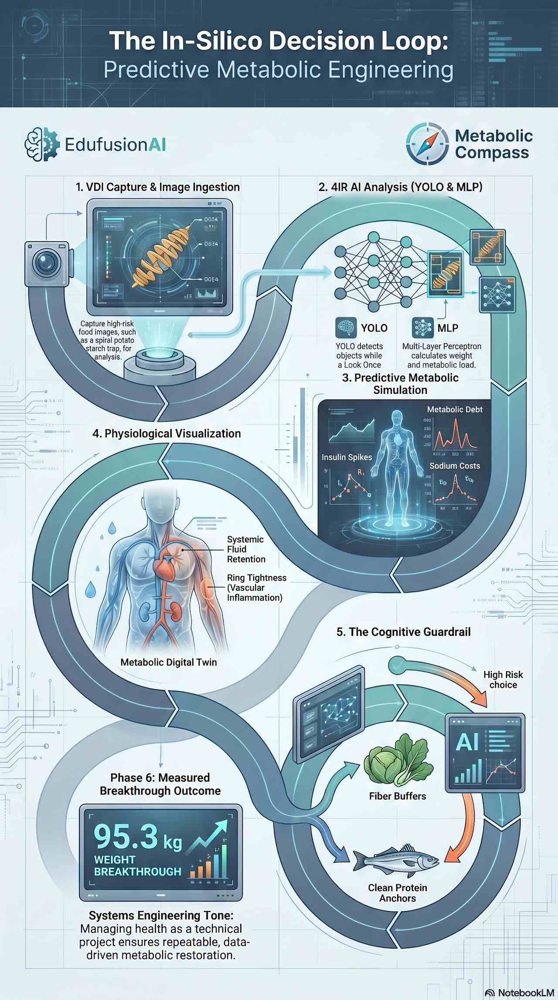

We are building a Human–AI “Centaur” partnership to experimentalise metabolic health in real-world settings.
EdufusionAI acts as a software patch that formalizes N-of-1 biological feedback into a scalable, predictive Metabolic Digital Twin.
Explore Research Collaboration
Simulate metabolic debt before it happens. Our architecture moves beyond retrospective tracking and acts as a preemptive cognitive guardrail.
Health is an engineering project. Our platform dynamically adjusts to real-time inputs to stabilize the insulin-sodium-water axis, eliminating postprandial somnolence and preserving cognitive capital.
Generic calorie deficits are mathematically flawed. We actively target hyperinsulinemia to deactivate the NHE3 exchanger, intercepting pre-diabetes and macrovascular damage.
Co-develop an evidence base for metabolic prevention. The South African public sector faces a catastrophic burden from late-stage Type 2 Diabetes complications; we want partners to help quantify the impact of early intervention.
Treating End-Stage Renal Disease (ESRD) via public sector dialysis costs the fiscus R200,000 – R400,000 per patient per year.
Early-stage screening and active digital intervention via the Metabolic Compass costs a fraction of this burden (R1,500 – R3,500 per person), scaling primary care by automating triage.
A universal framework for researcher resilience, lab productivity, and institutional capacity development.
We are seeking collaborators and funders to stress test the protocol in real-world cohorts, refine the Metabolic Digital Twin, and generate publishable evidence for scaled deployment.
If you are leading a clinical, public health, or data science programme and would like to explore a joint pilot or grant proposal, we’d like to hear from you.
Email: info@edufusionai.co.za